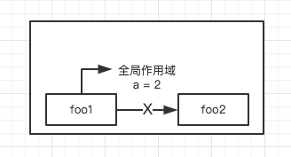

作用域”我们知道是一套规则，用来管理引擎如何在当前作用域以及嵌套的子作用域中根据标识符名称进行变量查找。
作用域有两种主要工作模型：词法作用域和动态作用域。
大多数语言采用的都是词法作用域，少数语言采用动态作用域（例如 Bash 脚本），这里我们主要讨论词法作用域。
大部分标准语言编译器的第一个工作阶段叫做词法化。
foo1 对变量 a 进行 RHS 查询时，在自己的作用域没有找到，引擎会去 foo1 的上级作用域（也就是全局作用域）中查找，
而并不会去 foo2 的作用域中查找，最终在全局作用域中找到 a 的值为 2。

总结来说，无论函数在哪里被调用，也无论它如何被调用，
它的词法作用域都只由函数被声明时所处的位置决定。
动态改变作用域。
在严格模式下，eval(...) 在运行时有自己的词法作用域，意味着其中的声明无法修改所在的作用域。
with 通常被当做重复引用同一个对象中的多个属性的快捷方式，可以不需要重复引用对象本身。
严格模式下，with 被完全禁止使用。
try...catch,try...catch 可以测试代码中的错误。try 部分包含需要运行的代码，而 catch 部分包含错误发生时运行的代码。
性能:JavaScript 引擎会在编译阶段进行数项性能优化。